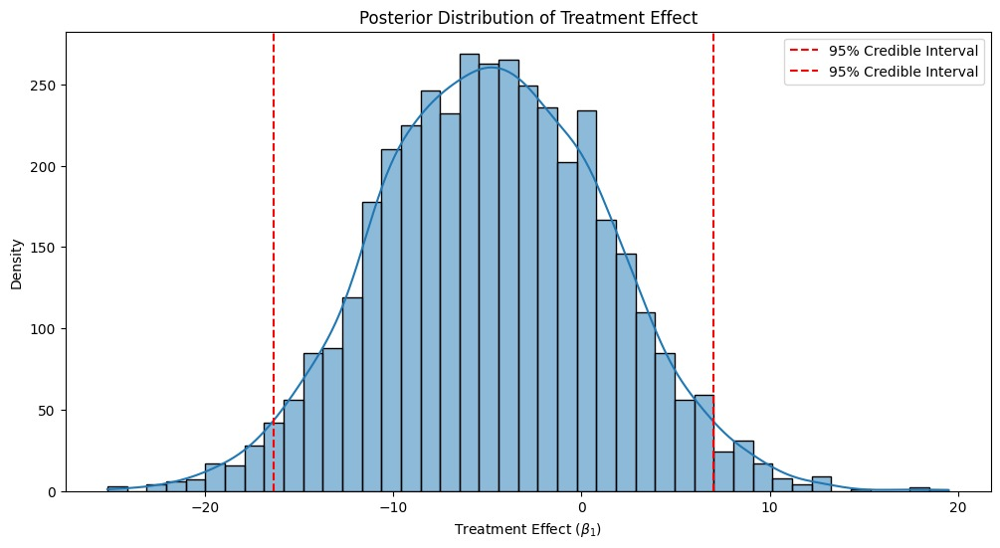
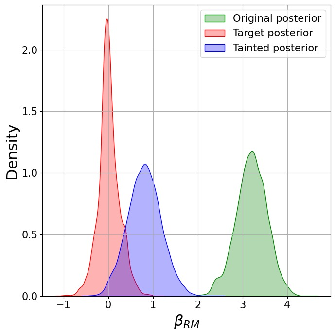
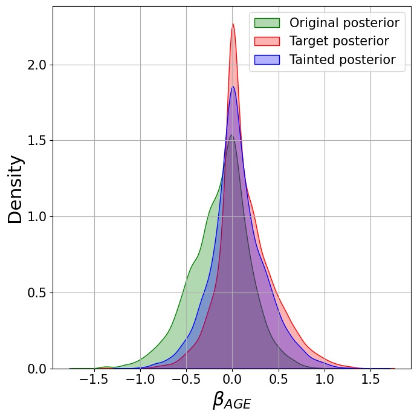
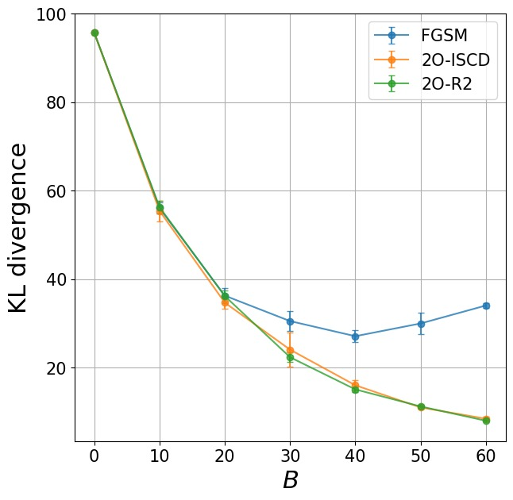
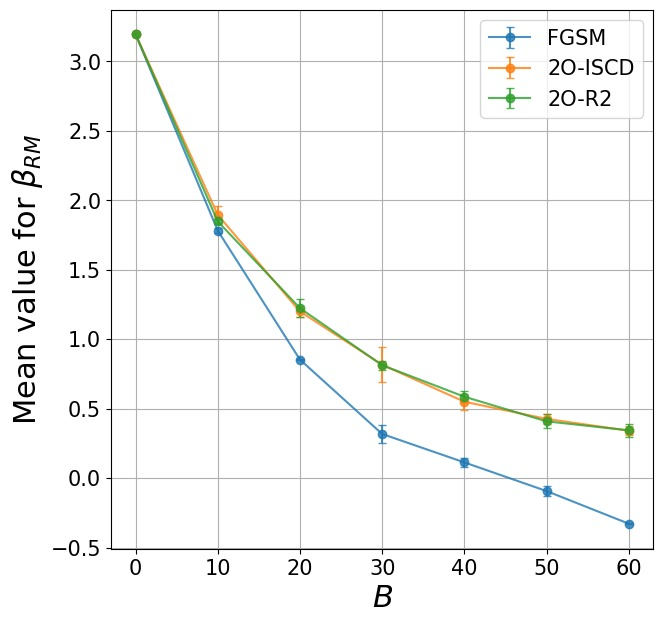

Can Small Data Manipulations Compromise ML-Based Decisions?
CUNEF University
École Centrale Nantes
Air Force Institute of Technology
Collaborating with Doctors
- A few years ago, I collaborated with (medical) doctors studying uterine fibroids (myomas).
Comparing Medical Procedures
Doctors compared two minimally invasive treatments for myomas to determine which:
- Is more effective at reducing fibroid size.
- Is less invasive for patients, measured by shorter hospital stays, lower blood loss, etc.
Procedures Compared:
- Radiofrequency Ablation (RFA)
- Uterine Artery Embolization (UAE)
Doctors’ Initial Expectations
Doctors initially expected RFA to outperform the alternative treatment:
- More effective at reducing myoma size.
- Less invasive, resulting in shorter hospital stays and quicker recovery.
Biased toward RFA!
Disappointing Results…
Statistical analysis revealed no significant differences between RFA and the alternative treatment regarding length of hospital stay.
Data did not support the doctors’ initial preference for RFA!
A “Statistical Adjustment” Suggestion
One doctor asked:
“Can we perform a statistical adjustment to make RFA look better?”
And I replied
“What do you mean by ‘statistical adjustment’?”
Doctor:
“Look, if we remove this patient with an unusually large myoma from the RFA group, the results become significant!”
Wait… Can We Do That?
- This is not how stats work!
- But this inspired a deeper question:
How can one systematically select a minimal subset of data points to manipulate in order to alter a statistical conclusion?
Background
In this project, we explore this question specifically within the context of Bayesian inference (aka Probabilistic Machine Learning).
Adversarial Machine Learning (AML), studies how data manipulations influence machine learning models.
However, there is a gap in the literature regarding adversarial attacks on Bayesian inference.
The types of attacks we consider involve manipulations of the training set and are known as poisoning attacks.
The Problem
- Honest Bayesian (Defender) observes data \mathbf{X}.
- Goal: infer unknown parameters \theta \in \mathbb{R}^d.
Posterior contains all relevant inferential information: \pi(\theta | \mathbf{X}) \propto \exp\Big(\textstyle\sum_{i=1}^n \log \pi(X_i | \theta)\Big) \pi(\theta)
- Posterior informs critical decisions such as medical treatments or economic policy.
- Typically computed via approximation (e.g., MCMC).
Example: Mexico Microcredit Data
- Randomized controlled trial on microcredit (16,560 businesses) conducted in Mexico City (Angelucci et al., 2015).
- Treatment assignment: x_i = \begin{cases} 1 & \text{microcredit} \\ 0 & \text{control} \end{cases}
- Objective: Assess impact on business profit y_i.
Example: Mexico Microcredit Data
Model used: y_i \sim \mathcal{N}(\beta_0 + \beta_1 x_i, \sigma^2)
Priors: \beta_0,\,\beta_1,\, \log(\sigma) \sim t(3,\,0,\,1000)
- Parameter \beta_1 represents the Average Treatment Effect (ATE).
Posterior for the ATE

- Posterior mean of ATE (\beta_1): -4.71 (negative impact).
- Potential policy implication: Do not expand microcredit.
The Sneaky Doctor
Attacker manipulates data by deleting or replicating points.
Represented by integer vector w \in \mathbb{Z}_{\geq 0}^n:
- w_i = 0: remove data point i
- w_i > 1: replicate data point i
- w_i = 1: no change
The Sneaky Doctor
Resulting posterior (w-induced posterior): \pi_w(\theta | \mathbf{X}) = \frac{1}{Z(w)} \exp\left(\sum_{i=1}^n w_i \log \pi(X_i|\theta)\right) \pi(\theta)
Goal: alter statistical conclusions by manipulating just a few data points.
The Attack
Just removing a strategically chosen 0.12 \% of the data points…
Formalizing the Adversary’s Problem
Goal: Find minimal data manipulations w \in \mathbb{Z}_{\geq 0}^n such that the resulting posterior \pi_w(\theta | \mathbf{X}) is as close as possible to a target distribution \pi_A(\theta).
Formalizing the Adversary’s Problem
Minimize forward KL divergence: \min_w \quad \text{KL}(\pi_A(\theta) \parallel \pi_w(\theta | X))
Subject to constraints: \|w - \mathbf{1}\|_1 \leq B, \quad \|w\|_\infty \leq L, \quad w \in \mathbb{Z}_{\geq 0}^n
But…
- Exact posterior often intractable (unknown normalization constant).
- There is no closed-form expression for the objective function.
- Integrality constraints further complicate the optimization problem.
Idea
Solve the continuous relaxation first using projected stochastic gradient-based optimization.
Then, project the solution to the integer space.
- Equivalent simplified objective: -w^\top \mathbb{E}_{\pi_A(\theta)}[f_X(\theta)] + \log Z(w) where f_X(\theta) = \log \pi(X|\theta) and \log Z(w) is the log of the normalization constant.
Estimating the Gradient
- The gradient of the objective is:
\nabla_w \log Z(w) - \mathbb{E}_{\pi_A}[f_X(\theta)]
- But \log Z(w) is intractable…
Estimating the Gradient - Main Trick!
- Notice posterior \pi_w(\theta | X) constitutes a subset of an exponential family with parameter w and log-partition function \log Z(w). Then:
\nabla_w \log Z(w) = \mathbb{E}_{\pi_w}[f_X(\theta)]
- Thus, the gradient simplifies to:
\nabla_w \log Z(w) - \mathbb{E}_{\pi_A}[f_X(\theta)] = \mathbb{E}_{\pi_w}[f_X(\theta)] - \mathbb{E}_{\pi_A}[f_X(\theta)]
Convexity and Hessian
- Moreover, the Hessian of the objective is:
\nabla^2_w \log Z(w) = \text{Cov}_{\pi_w}(f_X(\theta), f_X(\theta)) \succeq 0
- Hessian is positive semidefinite:
- Objective function is convex (relaxed).
- Convergence results from stochastic gradient descent apply!
Solution Approaches: Main Idea
We use a two-stage heuristic (SGD-R2):
- Relaxation: Solve continuous relaxation via projected stochastic gradient methods.
- Rounding step: Project the relaxed solution onto the integer feasible set.
SGD Rounded Relaxation (SGD-R2)
- At each step, use stochastic gradient descent updates:
w_{\text{new}} \gets \Pi_{\mathcal{W}}\left(w_{\text{old}} - \gamma_t \hat{g}\right)
where \Pi_{\mathcal{W}} is the projection operator onto the feasible set
\mathcal{W} = \{w \in \mathbb{R}^n \mid w \succeq 0,\, \|w\|_{\infty}\le L,\; \|w - \mathbf{1}\|_1 \leq B\}
- Recall that the gradient could be expressed as: \mathbb{E}_{\pi_w}[f_X(\theta)] - \mathbb{E}_{\pi_A}[f_X(\theta)]
SGD-R2: Gradient Estimation
- Unbiased gradient estimate:
\hat{g} = \frac{1}{P}\sum_{i=1}^P f_X(\theta_i) - \frac{1}{Q}\sum_{j=1}^Q f_X(\theta_j)
- With samples: \theta_i \sim \pi_w(\theta|\mathbf{X}) and \theta_j \sim \pi_A(\theta)
- Interestingly, we do not need a closed-form expressions for neither the posterior nor the target distribution!
Rounding to an Integer Solution
Solve constrained rounding problem to find integer feasible solution w^* close to relaxed solution:
w^* = \arg\min_{w' \in \mathcal{W}\cap\mathbb{Z}^n_{\geq 0}} \|w'-w\|^2_2
- Optimal rounding solution exists in closed form:
w^*_i = 1 + \text{sign}(w_i - 1)(\lfloor |w_i - 1| \rfloor + \alpha_i)
Variants for Improved Efficiency
Adam-R2: Use Adam optimizer, scales gradients, faster practical convergence.
Second-order methods (2O-R2): Exploit Hessian information.
Computational considerations
- Estimating gradients might require MCMC sampling.
- However, gradual changes in w allow reuse of previous MCMC samples, reducing burn-in and computational overhead.
Back to the Mexico Microcredit data
Assume we have resources to manipulate at most B=20 data points (just 0.12\% of the data!).
Back to the Mexico Microcredit data
Other posteriors are affected too!
A more complex model
Infer parameters of a linear model for predicting housing prices from house characteristics (Boston Housing dataset):
y_i \sim \mathcal{N}(\alpha + x_i^\top \beta,\,\sigma^2), \quad i=1,\dots,n
- y_i: Median house price (MEDV).
- x_i: Covariates (e.g., number of rooms, age of building, etc).
- Dataset size: n=404, with d=13 covariates.
A more complex model
- Model chosen by the Honest Bayesian:
Linear model with sparsity-inducing Horseshoe prior on parameters (MCMC for inference).
- Adversary’s goal: Manipulate data to steer inference about the parameter of the number of rooms (\beta_{RM}) toward 0.
Effect on the posterior


Attacks are precise: minimally affects other parameters
Our approach uses KL divergence to control precision, minimizing unwanted effects.
Conclusions
- Introduced novel poisoning attacks on Bayesian inference.
- Attack involves data deletion and replication to steer the posterior toward an adversarial target.
- Applicable to any Bayesian model with MCMC sampling capability.
Future Research Directions
- Develop methods for systematically designing adversarial targets:
- E.g., using entropic tilting to achieve specific inferential goals.
- Investigate scalable extensions for high-dimensional datasets and large Bayesian models.
- Design manipulation stategies for situations in which the attacker has partial knowledge of the model.
Thank You!
Questions are welcome!
📧 roi.naveiro@cunef.edu
🌐 https://github.com/roinaveiro

A couple of alternative heuristics
- Interger-Steps Coordinate Descent (ISCD):
- At each iteration, consider feasible neighbors w \pm e_i.
- Update neighbor with best estimated improvement:
- Fast Gradient Sign Method (FGSM):
- Commonly used in adversarial ML literature (Goodfellow et al., 2014).
- Estimate gradient once, manipulate B points with highest gradient magnitudes.
Integer-Steps Coordinate Descent
Start with initial feasible w = \mathbf{1}.
At each iteration, consider feasible neighbors w \pm e_i.
Select neighbor with best estimated improvement: j \gets \argmin_i \left\{-|\hat{g}_i|+\frac{1}{2}\hat{H}_{i,i}\right\}
Update: w \gets w - \text{sign}(\hat{g}_j)e_j
Baseline Attack: FGSM
- Commonly used in adversarial ML literature (Goodfellow et al., 2014).
- Adapted here to use stochastic gradients.
- Initialize w = \mathbf{1}.
- Compute gradient estimate \hat{g} once.
- Select B points with highest gradient magnitudes.
- Update selected points: w_i \gets w_i - \text{sign}(\hat{g}_i)
Which datapoints to manipulate?
Heuristic comparison

KL Divergence vs Number of Manipulated Points

Posterior mean of \beta_{RM} vs Number of Manipulated Points